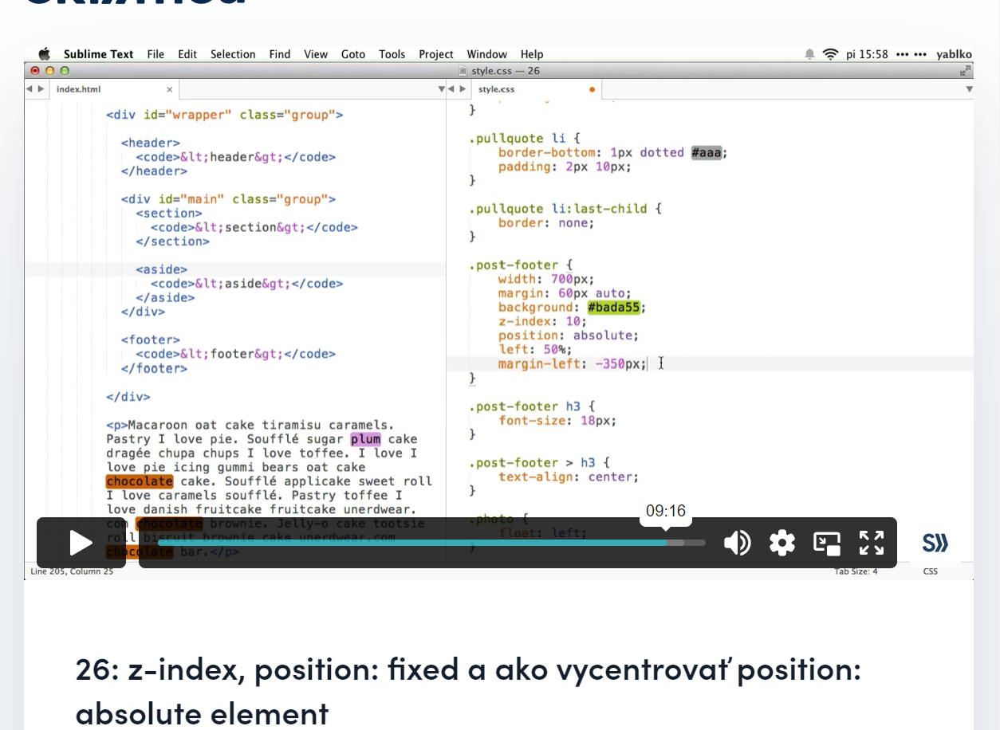

sectionsuper clanok TU
layout stranky 1. verzia TU
layout stranky 2. verzia TU
niekedy je potrebna presnejsia kontrola nad nastavovanim pozicie (presnejsia nez len umiestnit element uplne vlavo). atribut position - dovoluje manipulovat s poziciou elementov cez offset hodnoty
za normalnych okolnosti ma kazdy element position: static;
position: fixed; - element ostava na stranke v tej istej pozicii, aj ked scrollujem
position: relative; TU - nevytrhne element z toku dokumentu, len ho zobrazi inde - aby sa zobrazoval na inom mieste ako tam, kde by "mal" byt (podla pravidiel toku dokumentu) - realne su tam, kde by mali byt, miesto im je tam ako keby drzane. vizualne su inde ale ich miesto ostava nezaplnene. mozu prekryvat nieco ine
position: absolute; TU - su vytrhnute z toku dokumentu
ak dam elementu position:absolute, left:0 a top:0 budu znamenat lavy horny roh dokumentu
ak dam elementu position:absolute a jeho rodicovi/niektoremu z rodicov position:relative, left:0 a top:0 budu znamenat lavy horny roh rodica
elementy, ktore v HTML pridu neskor, su vyssie. to viem ovplyvnit nastavenim z-indexu (vyssi z-index - element je vyssie). pokial element nema position, z-index je ignorovany!
ako vycentrovat position absolute? neda sa to urobit pomocou margin:auto, ten sa spolieha na tok dokumentu (a position absolute vytrhne dany element z toku). nastavime left na 50% a margin left na -polovicu sirky elementu
headersection